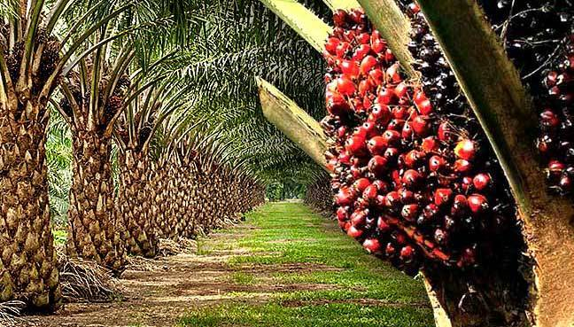

 <div class="row justify-content-between align-items-center service-section-left-contents">


      <div class="col-md-8 service-section-right-contents">
        <div class="row">
          <div class="col-md-6">
            
          </div>

          <div class="col-md-6">
            
          </div>
        </div>

   <div class="desc-contents">
          <h3>A new profitable way to sell and invest your farm produce COCOA AND PALM OIL</h3>
          <p>
            Our strong supply chain enables us to purchase cocoa and palm oil from our farms and local farmers,
            promoting fair trade practices and empowering rural communities. We also distribute our products globally,
            connecting with manufacturers, distributors, and consumers worldwide While introducing an innovative and
            lucrative approach for marketing and investing in farm produce, leveraging modern technology,
            direct-to-consumer models, sustainable practices, and value-added processing to maximize profits and attract
            conscious investors, giving our farmers the opportunity to sell their produce at the very best price.
          </p>
          <button class="btn btn-sms">
            Read More
          </button>
        </div>